In our last section we talked about possible associations between variables. For this lesson we will concentrate on the association between two quantitative variables. While the are processes that are in place to discuss the association between qualitative / categorical variables, we will not worry about that now.
So let’s assume that we have asked a question about the association between two quantitative variables. How can we go about trying to determine if there may be an association? The first step we will take it to draw a picture to determine if there could be an association. The picture we will draw is called a scatterplot.
A scatterplot has a horizontal and a vertical axis. The horizontal axis will represent the independent / explanatory variable while the verical axis will represent the dependent / response variable.
For example,let’s say we are reviewing the grades in our class. We are looking at the grade received on the final and comparing it to how well the student did on the quizzes throughout the semester.The idea is that if you
did well on the quizzes, then you did well on the final. If you have struggled on the quizzes, then you struggled on the final. In this case we are using the quiz scores as the explanatory variable and the grade on the final as the response variable. Here we will read in the data set from the class grades :
# The grades are stored in the file name "Grades.csv"grades <-read.csv("Grades.csv")# Let's look at the three rows of the data :grades_3 <- grades[1:3, ]grades_3
For the scatterplot, we would now plot these rows as points. Since the quiz average is the explanatory variable it will come first followed by the final score, the response variable:
We can use ggplot to create the scatterplot for use. The basic command is :
ggplot(data_frame, aes( x = explanatory, y = response)) + geom_point( )
The first part creates the horizontal and vertical axis and the second part says to use points on the graph.
The scatterplot for the first three points would look like :
ggplot(grades_3, aes(x = Quiz_Average, y = Final)) +geom_point()
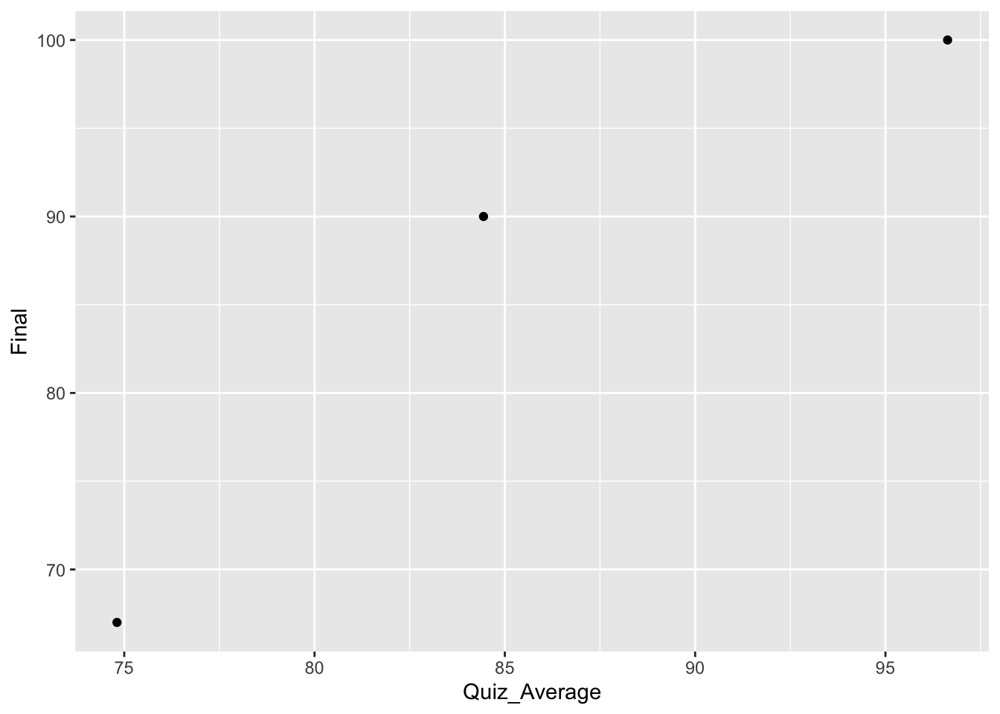
You can easily see the three points we listed above. We could then move on and do this for all the pairs in the data frame for the entire class. This data set has 50 rows, and here are the first and last six rows :
This is what the scatterplot would look like if we plotted all of the pairs :
ggplot(grades, aes(x = Quiz_Average, y = Final)) +geom_point( )
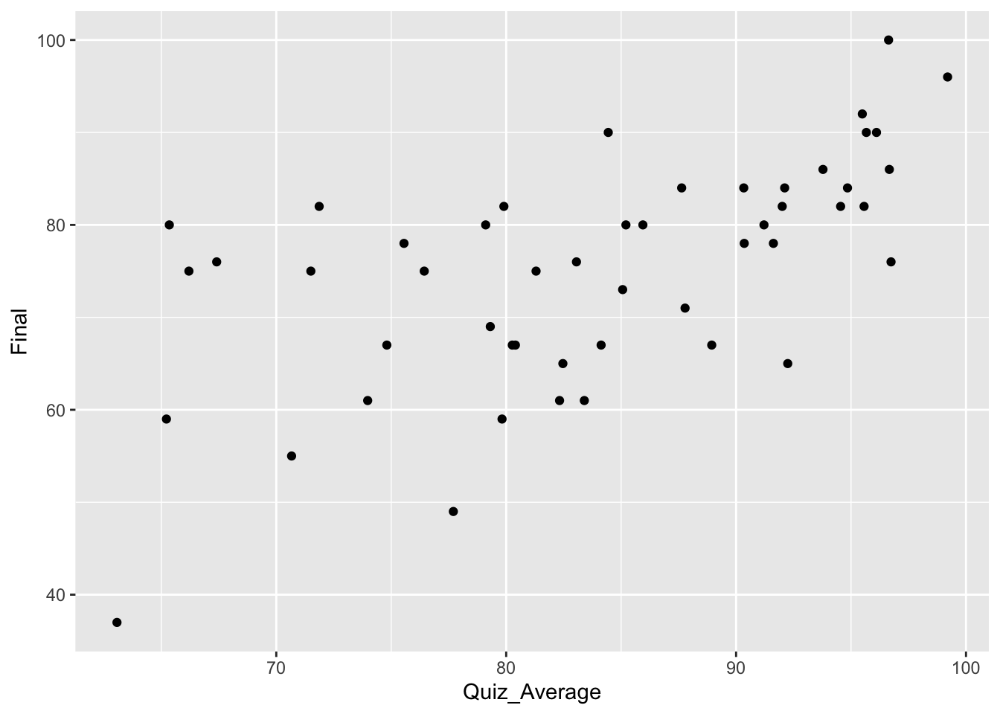
Describing a Scatterplot
When we describe a scatterplot there are three components we want to discuss : form, direction, and strength.
Form
When we talk about the form of a scatterlpot, we are talking about the shape of the scatterplot. If the graph has a definitive pattern, then it can be modelled. What that means is that we can come up with a mathematical formula that follows the pattern of the data. As we will see later, having a model for our data set allows us to take deeper steps in understanding what the data has told us and what the data may still tell us.
For this course, we will focus our efforts on data sets that follow a linear pattern. These pattens are a nice introduction to creating a model for a data set. Linear models (lines) are the easiest to create. This does not mean that a linear model is the best model for every data set, far from it. As you advance in your studies you will find data that follows quadratic, logarithmic, and many other forms. You will even find data sets that will not follow any pattern whatsoever!
Therefore, at least for this class, we will describe the form of a data set as either linear or non-linear.
Direction
Since we are only going to be creating linear models, the direction of the scatterplot really talks about the direction the model is going. Are the points of the data set going in an upward direction or a downward direction? If the points are going up, then the linear model would be a line that is going up. If the points are going down, then the linear model would be a line that is going down.
If you recall, when a line is going up, it has a positive slope, and if it is going down, then it has a negative slope. When a linear model is going up (positive slope), then the smaller explanatory values are matched with lower response variables while larger explanatory variables get matched with larger response variables. Similarly, for linear models that are going in a downward direction (negative slope), then smaller explantory variables get matched with larger response variables and larger explanatory variables get matched with smaller response variables.
We will use this same varnacular when discussing the direction of a scatterplot. If the points of the scatterplot are following a linear pattern that is going up, then we will say that this is a positive association. If the scatter plot is following a decreasing linear pattern then we will say it has a negative association.
Strength
The strength of the scatterplot describes how closely the points follow a pattern. If the points follow a pattern very closely then the data is said to be strong. If it does not follow a pattern then it is said to be weak.
Where you have to be careful is when you are only considering one kind of pattern. For example, we are only considering linear patterns for now. So if we are given a data set that clearly follows a quadratic pattern, it would still have a model that is very good for that particular data set. But for our purposes, we would say that the strength is weak because it does not follow a linear pattern. What you need to remember is that when we are talking about the strength of a data set, we are talking exclusively about the linear strength of a data set.
Consider the following pictures and briefly describe them using the three descriptors form, direction, and strength.
The first example is the data set we used above. A line has been added to help think about how to describe the data.
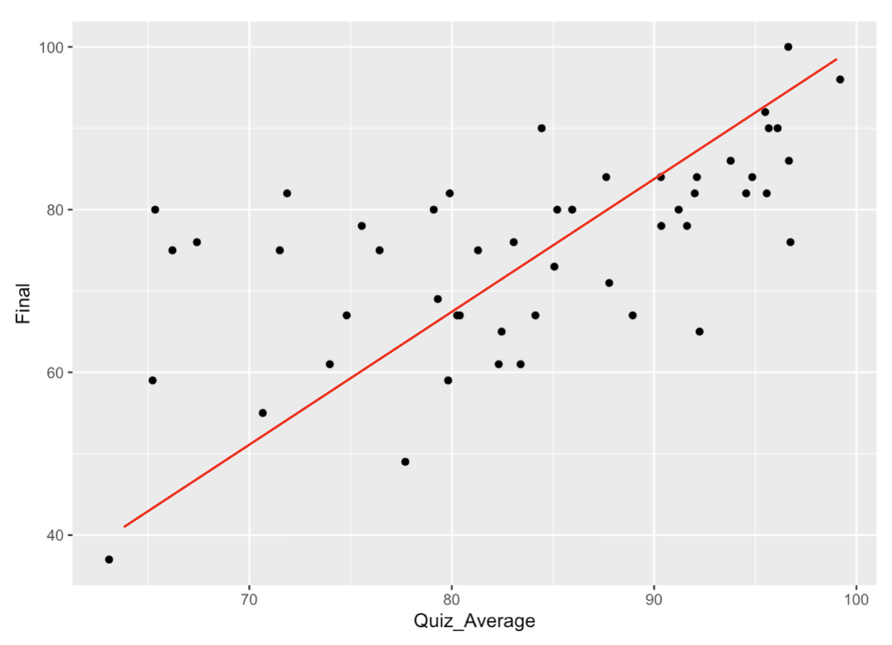
Form : The data loosely follows a linear pattern.
Direction : The data follows a positve association.
Strength : While the data is not a perfect line, it does somewhat follow a linear pattern, so we will say this has moderate strength.
Consider this scatterplot for our second example :
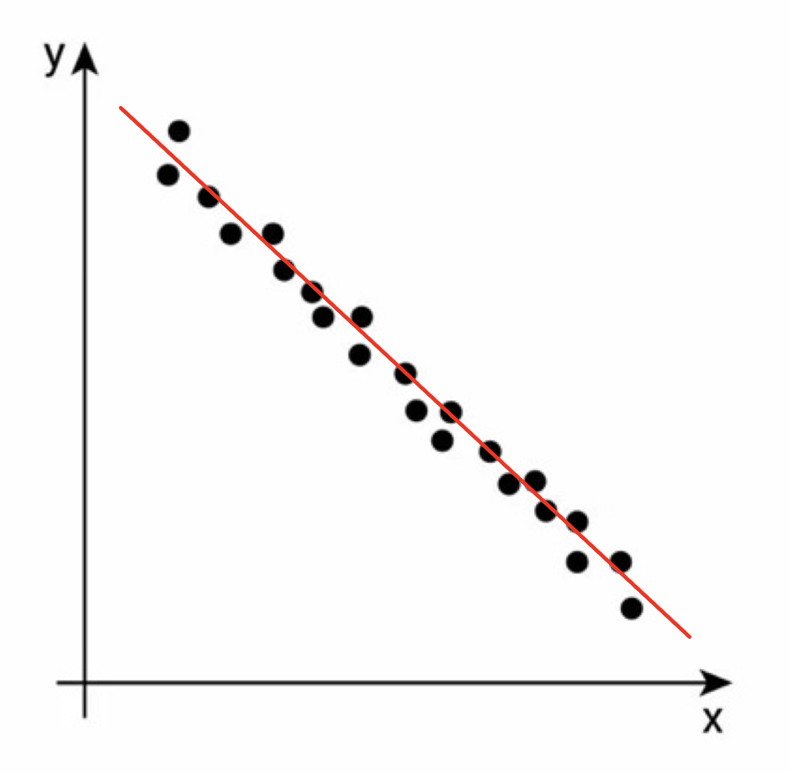
Form : The data follows closely a linear pattern.
Direction : The data follows a negative association.
Strength : This data set is close to a perfect line, so we will say this association is strong.
The third example gives us a different shape.
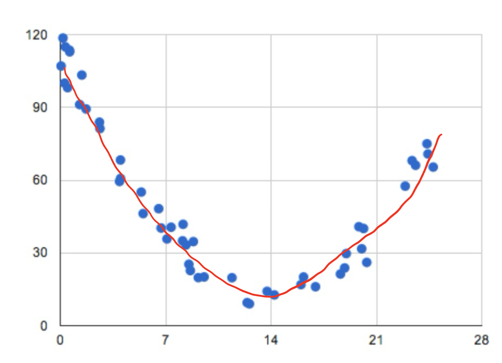
Form : The data clearly follows a pattern, but it is not a linear pattern. This means we will describe this form as non-linear.
Direction : This data set goes down and up, so we should say it has a non-linear direction.
Strength : The data closely follows a pattern, but it does not follow a linear pattern, Therefore we will say this has a weak linear strength.
Our fourth example also gives us a different shape :
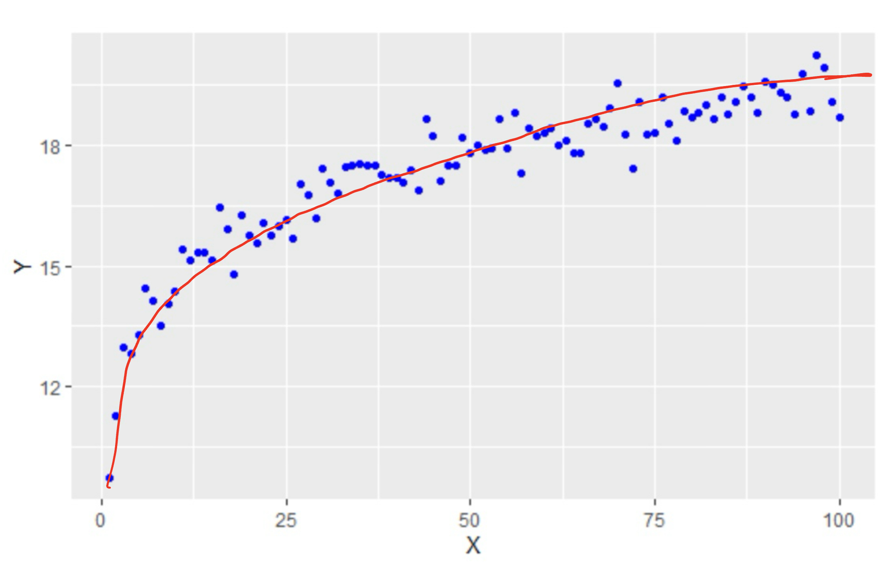
Form : The data follows a logarithmic pattern so we would say the form is non-linear.
Direction : This data set goes up but doesn’t follow a linear pattern, so we should say it has a non-linear direction.
Strength : The data closely follows a pattern, but it does not follow a linear pattern, Therefore we will say this has a weak linear strength.
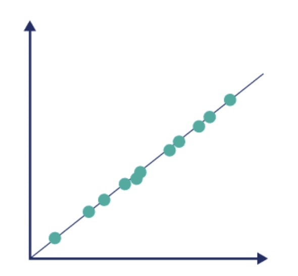
Form : The data is just about a perfect line. Clearly we would say the form is linear.
Direction : This data set goes up in a linear fashion, so we would say this has a positive association.
Strength : The data follows a linear pattern about as well as possible. We would say this has a perfect strength.
Our last example shows us a picture with no real pattern at all:
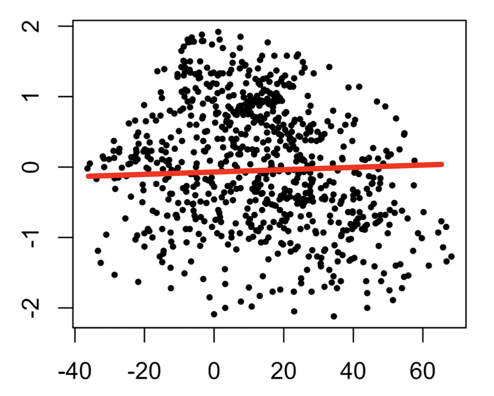
Form : The data appears to be random points. We would say this has no form.
Direction : This data doesn’t appear to go in any kind of direction so we would say no direction.
Strength : The data follows no linear pattern at all, so we would say this scatterplot has no strength.
So if someone walks up to you on the street, hands you a scatterplot and asks you to describe the scatterplot, this is what you want to do. You want to describe the form, direction, and strength of the scatterplot.
Hopefully you have had at least one concern pop in your head when trying to determine some of these attributes from a picture. The form and direction should not be much of an issue from the picture, but what about the strength? This can sometimes be difficult to determine from a picture.
A picture can be misleading depending on how it is presented. If a picture is drawn with a poor scale, the points themselves might appear to be much further apart from each other than they should, causing one to thing the strength is weaker than it really is. On the other hand, the scale could cause the points to be much closer than they should causing the reader to thing that there is more strength than there should be. What needs to be done to addressing the question of strength is to come up with a quantifiable measure (a formula) that can help us assess the linear strength of the data.
Luckily for us, there is such a measure and it is called the correlation of the data set.
Correlation
Correlation is a device that measures the linear strength between two variables. So before calcuating the correlation of a data set, it is often a good idea to create a scatterplot to see if the data follows a linear pattern. If it does, then calculating the correlation is a good next step. If the data does not follow a linear pattern, then it does not make sense to use a correlation. It is entirely possible that you are given a data set that follows a pattern very closely that is not a linear pattern. The data would have a good strength but it would not have a good linear strength. Since that is what correlation measures, make sure the data somewhat follows a linear pattern before moving forward.
That leads us to the obvious question of how we calculate the correlation. For this course, you will not be asked to prove the formula for correlation, nor will you be asked to calculate the correlation by hand. However, for completion sake, I will present to formula below :
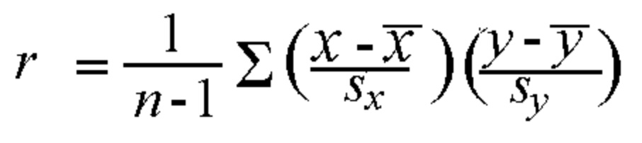
where
\(n\) is the size of the sample
\(\overline{x}\) is the average of the explanatory variable
\(\overline{y}\) is the average of the response variable
\(s_x\) is the standard deviation of the explanatory variable
\(s_y\) is the standard deviation of the response variable
\(r\) is the calcualted value called the correlation.
There are some properties for \(r\) we need to know in order to understand the result of the calculation.
\(r\) should always be a value between -1 and 1.
If the scatterplot has a positive association, then \(r\) should have a positve value.
If the scatterplot has a negative association, then \(r\) should have a negative value.
If the strength is strong and positive, then \(r\) will be closer to 1.
If the strength is strong and negative, then \(r\) will be closer to -1.
If there is no association and the strength is weak then \(r\) will be close to \(0\)
Luckily for us, this is very easy to calculate with R. We can use the built in cor( ) command. All you need to tell it are the two variables you want to find the correlation between. The form is pretty simple:
cor( Explanatory Variable, Response Variable)
Note : For this particular command the order of explanatory and response is not important, but there are other commands where the order is important. Make sure you read the descriptions to understand the order in which to write out the variables.
Let’s go back to the grades example we look at above. If you recall, the scatterplot had a positive linear association that was mostly following a linear pattern. The pattern wasn’t very close to perfect, so \(r \neq 1\), but it is not a weak pattern either so \(r > 0\). In these cases, a guess of \(r\) being between 0.5 and 0.7 is probably pretty good. We can check below:
# Calculate the coorelation between the Quiz Average and grade on Finalr <-cor(grades$Quiz_Average, grades$Final)r
[1] 0.6086302
Here are some examples of what other correlation values might look like :
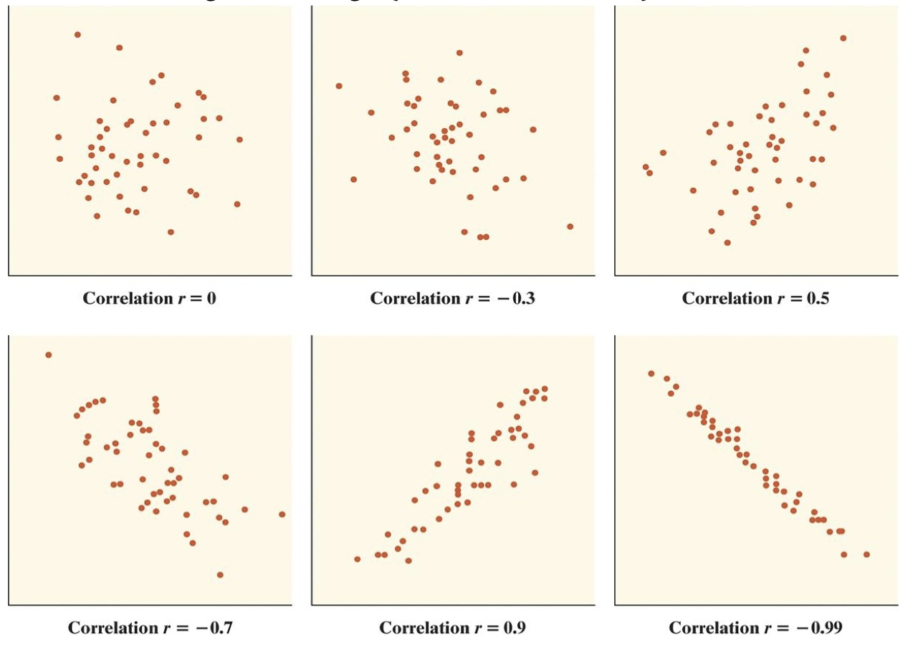
Conclusion
Let’s not lose sight of what we are doing and why we are doing it. We have started down the road of trying to determine if there is a relationship between two variables and if there is a way we can create a mathematical model for that relationship. The model we have chosen as our first choice is a linear model.
Our first step was to look at a visualization of the relationship. Therefore we created a scatterplot for the explanatory and response variable. After we had this completed, we look at the description (form, direction, and strength) of the scatterplot to determine if there was a linear pattern in the data. If there was, we were then curious about the linear strength of the data. To determine this, we calculated the correlation of the data.
This brings us to the next question. What’s next?
If we have decided that there is a linear relationship between the variables, then we want to come up with a model for this relationship. In our case we will be creating a linear model, which is a line. We will see how we can construct this model and how we can use it in the next section.
Exercises
In this assignment, you will practice determining if there is a linear relationship between two quantitative variables in various built-in datasets in R. You will calculate the correlation and create basic scatterplots using ggplot2 to visualize the relationships. Each problem will involve different pairs of variables from different datasets. Provide solutions a nd explanations for each problem.
For each of the following problems, answer the following:
Calculate the correlation between the variables given.
Create a scatterplot using ggplot2.
Describe the scatterplot by discussing the form, direction, and strength of the relationship.
Determine if this could be a good candidate for linear regression.
Problem 1: Iris Dataset - Sepal Length vs Petal Length
Task: Determine if there is a linear relationship between Sepal.Length and Petal.Length in the iris dataset.
Solution and Explanation:
# Load ggplot2 and iris datasetlibrary(ggplot2)data(iris)# Calculate correlationcor_sepal_petal <-cor(iris$Sepal.Length, iris$Petal.Length)cor_sepal_petal
[1] 0.8717538
# Create scatterplotggplot(iris, aes(x = Sepal.Length, y = Petal.Length)) +geom_point() +labs(title ="Scatterplot of Sepal Length vs Petal Length", x ="Sepal Length", y ="Petal Length")
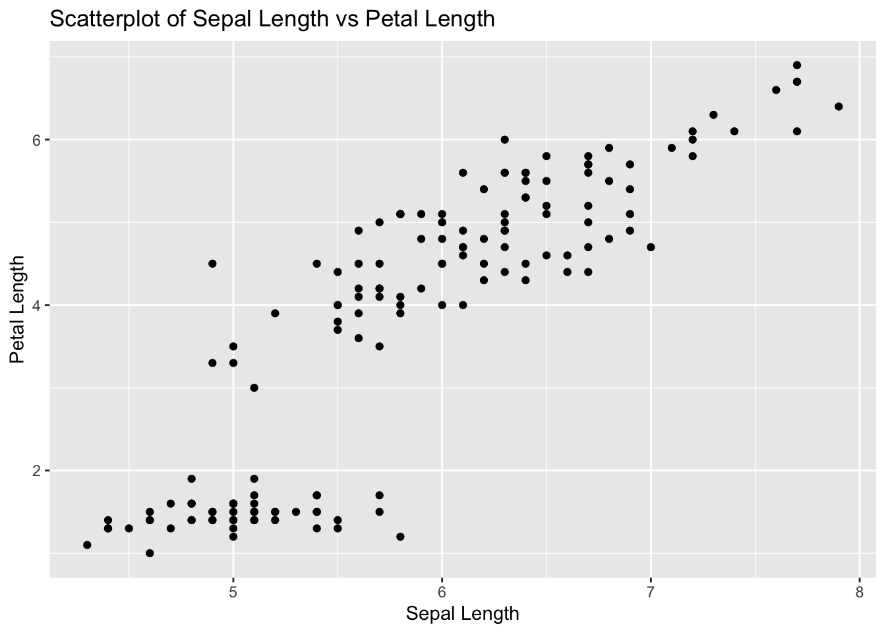
# Explanation:# The correlation value indicates the strength and direction of the linear relationship between Sepal Length and Petal Length.# The scatterplot visualizes this relationship.
Problem 2: Airquality Dataset - Ozone vs Wind
Task: Determine if there is a linear relationship between Ozone and Wind in the airquality dataset.
Solution and Explanation:
# Load ggplot2 and airquality datasetlibrary(ggplot2)data(airquality)# Remove NA valuesairquality_clean <-na.omit(airquality)# Calculate correlationcor_ozone_wind <-cor(airquality_clean$Ozone, airquality_clean$Wind)cor_ozone_wind
[1] -0.6124966
# Create scatterplotggplot(airquality_clean, aes(x = Ozone, y = Wind)) +geom_point() +labs(title ="Scatterplot of Ozone vs Wind", x ="Ozone", y ="Wind")
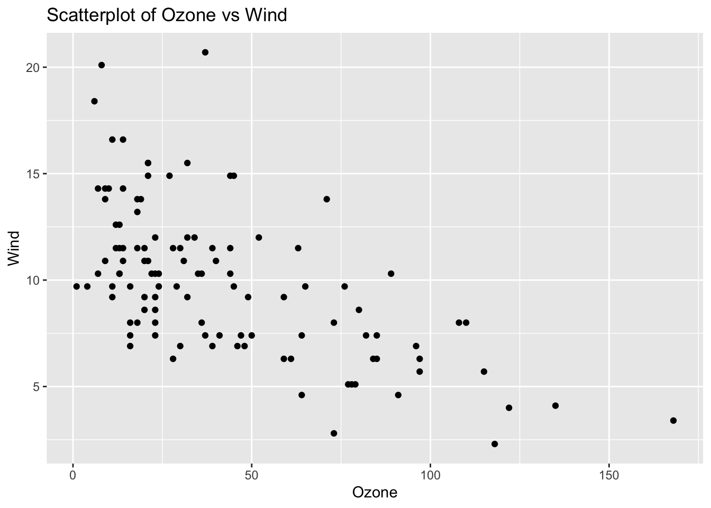
# Explanation:# The correlation value indicates the strength and direction of the linear relationship between Ozone and Wind.# The scatterplot visualizes this relationship.
Problem 3: ToothGrowth Dataset - Dose vs Length
Task: Determine if there is a linear relationship between dose and len in the ToothGrowth dataset.
Solution and Explanation:
# Load ggplot2 and ToothGrowth datasetlibrary(ggplot2)data(ToothGrowth)# Calculate correlationcor_dose_len <-cor(ToothGrowth$dose, ToothGrowth$len)cor_dose_len
[1] 0.8026913
# Create scatterplotggplot(ToothGrowth, aes(x = dose, y = len)) +geom_point() +labs(title ="Scatterplot of Dose vs Length", x ="Dose", y ="Length")
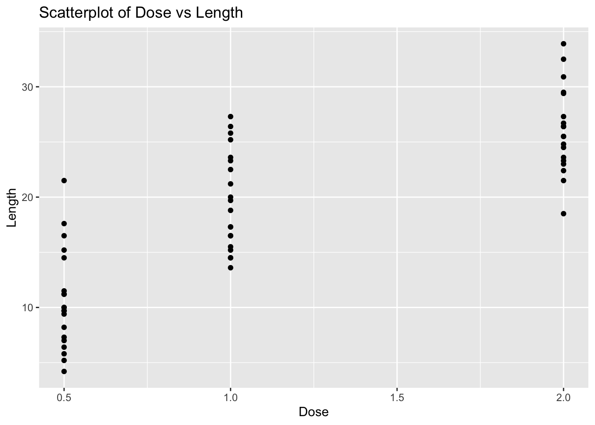
# Explanation:# The correlation value indicates the strength and direction of the linear relationship between Dose and Length.# The scatterplot visualizes this relationship.
Problem 4: Cars Dataset - Speed vs Stopping Distance
Task: Determine if there is a linear relationship between speed and dist in the cars dataset.
Solution and Explanation:
# Load ggplot2 and cars datasetlibrary(ggplot2)data(cars)# Calculate correlationcor_speed_dist <-cor(cars$speed, cars$dist)cor_speed_dist
[1] 0.8068949
# Create scatterplotggplot(cars, aes(x = speed, y = dist)) +geom_point() +labs(title ="Scatterplot of Speed vs Stopping Distance", x ="Speed", y ="Stopping Distance")
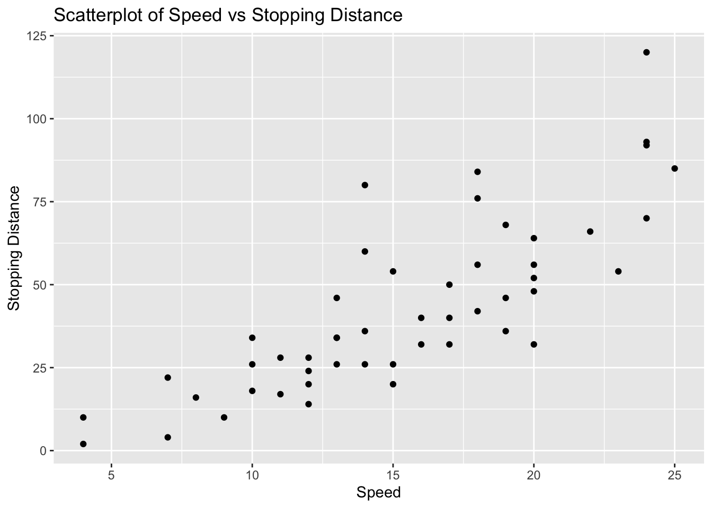
# Explanation:# The correlation value indicates the strength and direction of the linear relationship between Speed and Stopping Distance.# The scatterplot visualizes this relationship.
Problem 5: Faithful Dataset - Eruptions vs Waiting Time
Task: Determine if there is a linear relationship between eruptions and waiting in the faithful dataset.
Solution and Explanation:
# Load ggplot2 and faithful datasetlibrary(ggplot2)data(faithful)# Calculate correlationcor_eruptions_waiting <-cor(faithful$eruptions, faithful$waiting)cor_eruptions_waiting
[1] 0.9008112
# Create scatterplotggplot(faithful, aes(x = eruptions, y = waiting)) +geom_point() +labs(title ="Scatterplot of Eruptions vs Waiting Time", x ="Eruptions", y ="Waiting Time")
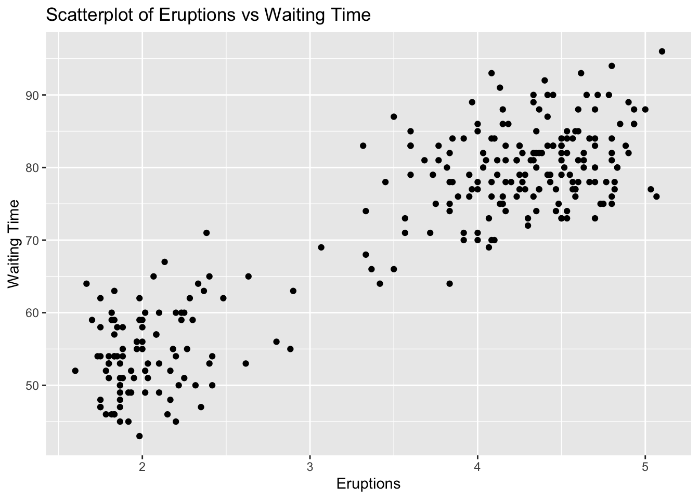
# Explanation:# The correlation value indicates the strength and direction of the linear relationship between Eruptions and Waiting Time.# The scatterplot visualizes this relationship.
Problem 6: ChickWeight Dataset - Time vs Weight
Task: Determine if there is a linear relationship between Time and weight in the ChickWeight dataset.
Solution and Explanation:
# Load ggplot2 and ChickWeight datasetlibrary(ggplot2)data(ChickWeight)# Calculate correlationcor_time_weight <-cor(ChickWeight$Time, ChickWeight$weight)cor_time_weight
[1] 0.8371017
# Create scatterplotggplot(ChickWeight, aes(x = Time, y = weight)) +geom_point() +labs(title ="Scatterplot of Time vs Weight", x ="Time", y ="Weight")
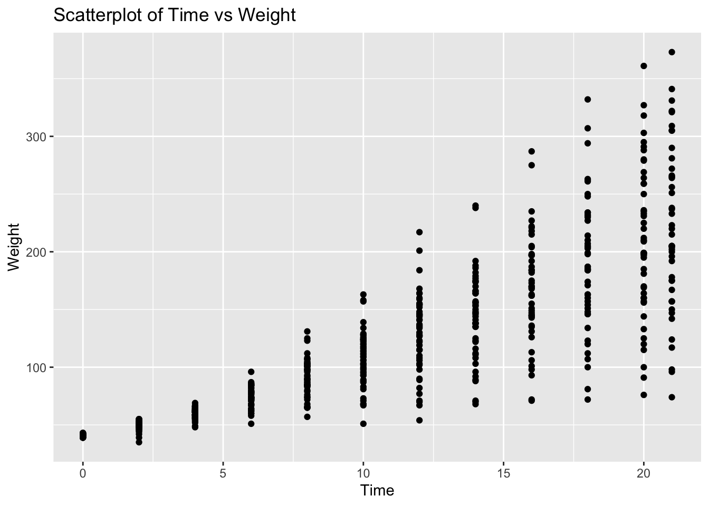
# Explanation:# The correlation value indicates the strength and direction of the linear relationship between Time and Weight.# The scatterplot visualizes this relationship.
Problem 7: Pressure Dataset - Temperature vs Pressure
Task: Determine if there is a linear relationship between temperature and pressure in the pressure dataset.
Solution and Explanation:
# Load ggplot2 and pressure datasetlibrary(ggplot2)data(pressure)# Calculate correlationcor_temperature_pressure <-cor(pressure$temperature, pressure$pressure)cor_temperature_pressure
[1] 0.7577923
# Create scatterplotggplot(pressure, aes(x = temperature, y = pressure)) +geom_point() +labs(title ="Scatterplot of Temperature vs Pressure", x ="Temperature", y ="Pressure")
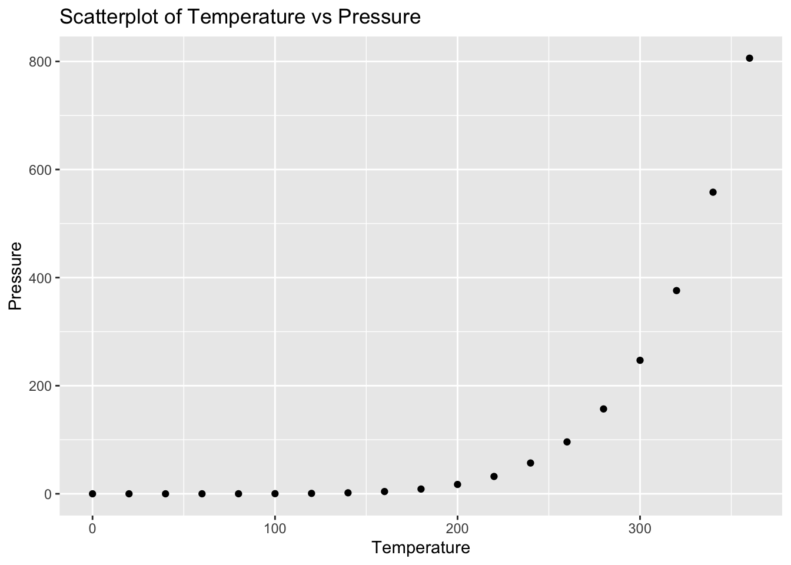
# Explanation:# The correlation value indicates the strength and direction of the linear relationship between Temperature and Pressure.# The scatterplot visualizes this relationship.
Problem 8: Trees Dataset - Girth vs Volume
Task: Determine if there is a linear relationship between Girth and Volume in the trees dataset.
Solution and Explanation:
# Load ggplot2 and trees datasetlibrary(ggplot2)data(trees)# Calculate correlationcor_girth_volume <-cor(trees$Girth, trees$Volume)cor_girth_volume
[1] 0.9671194
# Create scatterplotggplot(trees, aes(x = Girth, y = Volume)) +geom_point() +labs(title ="Scatterplot of Girth vs Volume", x ="Girth", y ="Volume")
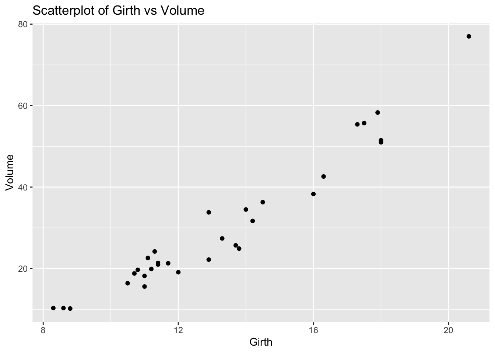
# Explanation:# The correlation value indicates the strength and direction of the linear relationship between Girth and Volume.# The scatterplot visualizes this relationship.
Problem 9: USArrests Dataset - Urban Population vs Assaults
Task: Determine if there is a linear relationship between UrbanPop and Assault in the USArrests dataset.
Solution and Explanation:
# Load ggplot2 and USArrests datasetlibrary(ggplot2)data(USArrests)# Calculate correlationcor_urbanpop_assault <-cor(USArrests$UrbanPop, USArrests$Assault)cor_urbanpop_assault
[1] 0.2588717
# Create scatterplotggplot(USArrests, aes(x = UrbanPop, y = Assault)) +geom_point() +labs(title ="Scatterplot of Urban Population vs Assaults", x ="Urban Population", y ="Assaults")
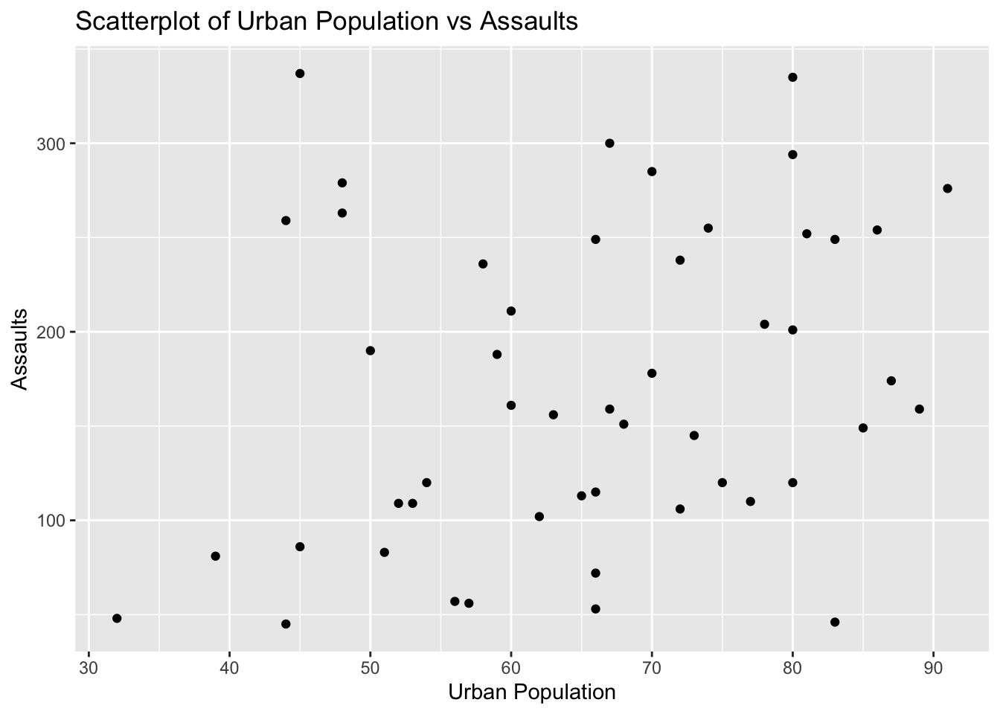
# Explanation:# The correlation value indicates the strength and direction of the linear relationship between Urban Population and Assaults.# The scatterplot visualizes this relationship.
Problem 10: Swiss Dataset - Education vs Fertility
Task: Determine if there is a linear relationship between Education and Fertility in the swiss dataset.
Solution and Explanation:
# Load ggplot2 and swiss datasetlibrary(ggplot2)data(swiss)# Calculate correlationcor_education_fertility <-cor(swiss$Education, swiss$Fertility)cor_education_fertility
[1] -0.6637889
# Create scatterplotggplot(swiss, aes(x = Education, y = Fertility)) +geom_point() +labs(title ="Scatterplot of Education vs Fertility", x ="Education", y ="Fertility")
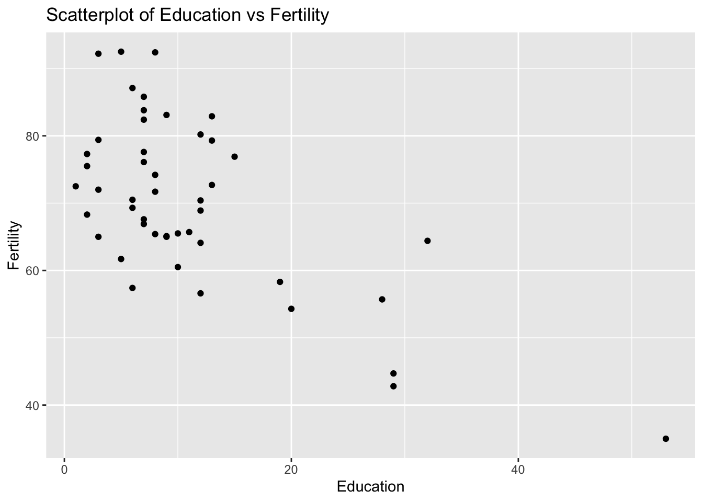
# Explanation:# The correlation value indicates the strength and direction of the linear relationship between Education and Fertility.# The scatterplot visualizes this relationship.